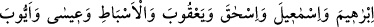
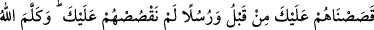
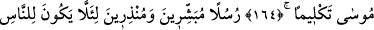
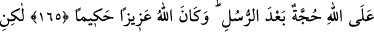
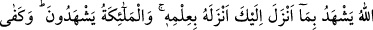
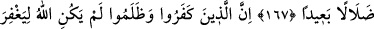
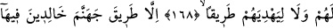
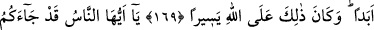
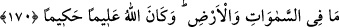

PEYGAMBERLER VE PEYGAMBERİMİZ
163- Biz Nuh’a ve ondan sonraki peygamberlere vahyettiğimiz gibi sana da
vahyettik. Ve “nitekim” İbrâhim’e, İsmâil’e, İshâk’a, Ya’kub’a, esbâta (torunlara,
Ya’kub oğullarına), Îsâ’ya, Eyyûb’a, Yûnus’a, Hârun’a ve Süleyman’a da
vahyettik. Dâvûd’a da Zebûr’u verdik.
164- Bir kısım peygamberleri sana daha önce anlattık, bir kısmını ise sana
anlatmadık. Ve Allah Mûsâ ile gerçekten konuştu.
165- (Yerine göre) müjdeleyici ve sakındırıcı olarak peygamberler gönderdik ki
insanların peygamberlerden sonra Allah’a karşı bir bahaneleri olmasın! Allah izzet
ve hikmet sâhibidir.
166- Fakat Allah sana indirdiğine şâhitlik eder, onu kendi ilmi ile indirdi. Melekler
de (buna) şâhitlik ederler. Şâhit olarak da Allah kâfidir.
167- İnkâr eden ve (başkalarını da) Allah yolundan alıkoyanlar şüphesiz doğru
yoldan çok uzaklaşmışlardır.
168- İnkâr edip zulmedenleri Allah asla bağışlayacak değildir. Onları (başka) bir
yola iletecek de değildir.
169- Ancak cehennem yoluna (iletecek ve) orada ebedî kalacaklardır. Bu da